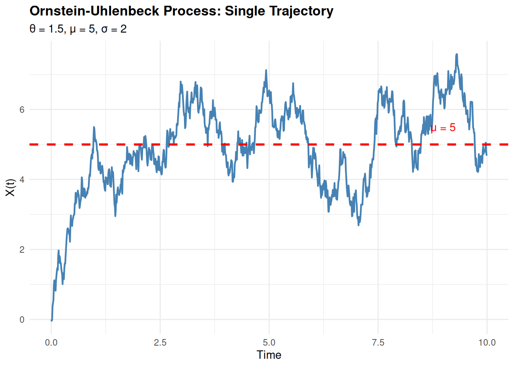
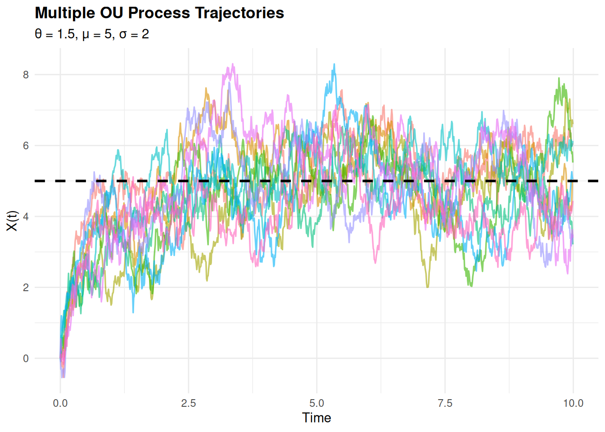
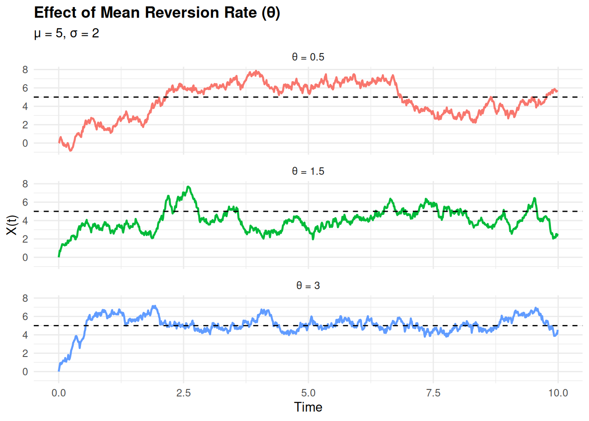
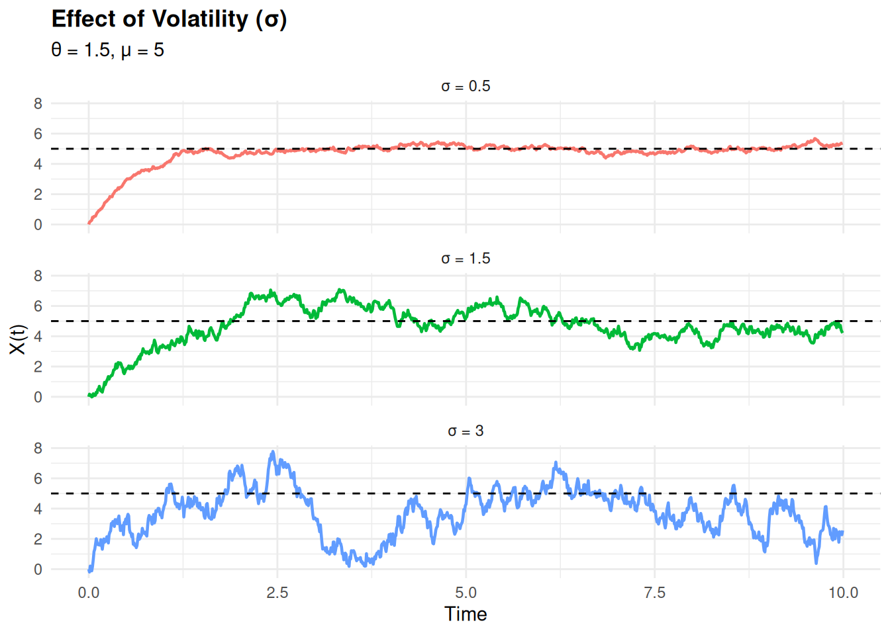
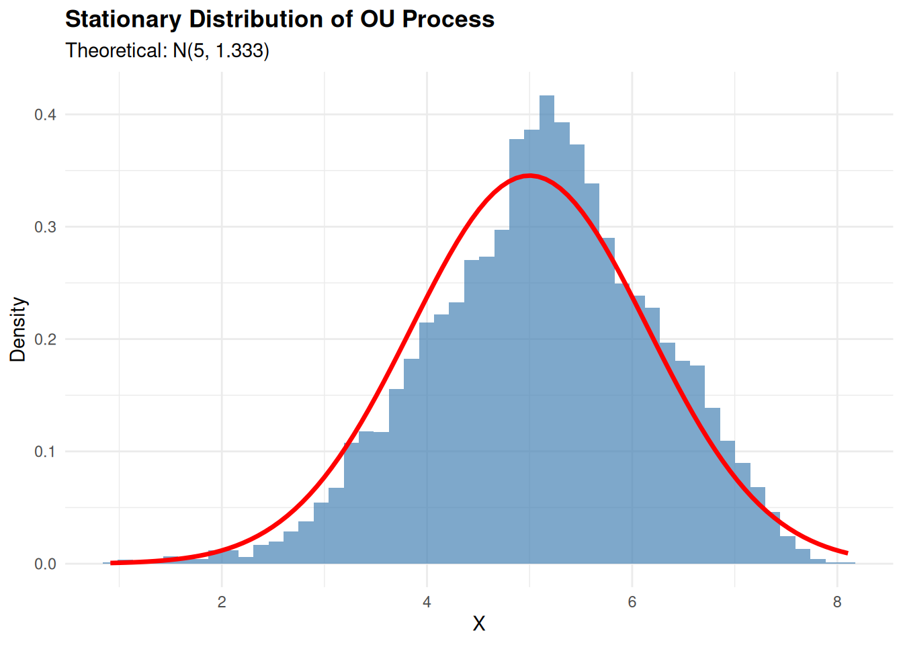

library(ggplot2)
library(dplyr)
library(tidyr)
# Set seed for reproducibility
set.seed(123)Ornstein-Uhlenbeck Process: Theory and Simulation
Introduction
The Ornstein-Uhlenbeck (OU) process is a stochastic process that describes the velocity of a massive Brownian particle under friction. It’s widely used in physics, finance, and biology as a mean-reverting process.
Mathematical Definition
The OU process is defined by the stochastic differential equation (SDE):
dX_t = \theta(\mu - X_t)dt + \sigma dW_t
where:
- X_t is the process value at time t
- \theta > 0 is the mean reversion rate (speed of reversion)
- \mu is the long-term mean (equilibrium level)
- \sigma > 0 is the volatility (diffusion coefficient)
- W_t is a Wiener process (standard Brownian motion)
- dW_t \sim N(0, dt)
Parameters Explained
- θ (theta): Mean reversion speed
- Higher θ → faster reversion to mean
- Lower θ → slower reversion (more persistent deviations)
- μ (mu): Long-term mean
- The level around which the process oscillates
- The expected value as t \to \infty
- σ (sigma): Volatility
- Controls the magnitude of random fluctuations
- Higher σ → more noisy process
Discrete-Time Approximation
Using the Euler-Maruyama method:
X_{t+\Delta t} = X_t + \theta(\mu - X_t)\Delta t + \sigma\sqrt{\Delta t}\,Z_t
where Z_t \sim N(0,1) are independent standard normal variables.
Simulation in R
Basic OU Process Simulation
simulate_ou <- function(n, dt, x0, theta, mu, sigma) {
# n: number of time steps
# dt: time increment
# x0: initial value
# theta: mean reversion rate
# mu: long-term mean
# sigma: volatility
x <- numeric(n)
x[1] <- x0
for (i in 2:n) {
dW <- rnorm(1, mean = 0, sd = sqrt(dt))
x[i] <- x[i-1] + theta * (mu - x[i-1]) * dt + sigma * dW
}
return(x)
}Single Trajectory Example
# Parameters
n <- 1000
dt <- 0.01
x0 <- 0
theta <- 1.5
mu <- 5
sigma <- 2
# Simulate
time <- seq(0, (n-1)*dt, by = dt)
trajectory <- simulate_ou(n, dt, x0, theta, mu, sigma)
# Create data frame
df_single <- data.frame(time = time, value = trajectory)
# Plot
ggplot(df_single, aes(x = time, y = value)) +
geom_line(color = "steelblue", linewidth = 0.8) +
geom_hline(yintercept = mu, linetype = "dashed", color = "red", linewidth = 1) +
annotate("text", x = max(time)*0.9, y = mu + 0.5,
label = paste0("μ = ", mu), color = "red") +
labs(title = "Ornstein-Uhlenbeck Process: Single Trajectory",
subtitle = paste0("θ = ", theta, ", μ = ", mu, ", σ = ", sigma),
x = "Time", y = "X(t)") +
theme_minimal() +
theme(plot.title = element_text(face = "bold"))
Multiple Trajectories
# Simulate multiple paths
n_paths <- 10
trajectories <- matrix(0, nrow = n, ncol = n_paths)
for (i in 1:n_paths) {
trajectories[, i] <- simulate_ou(n, dt, x0, theta, mu, sigma)
}
# Create data frame
df_multi <- data.frame(time = time, trajectories) %>%
pivot_longer(cols = -time, names_to = "path", values_to = "value")
# Plot
ggplot(df_multi, aes(x = time, y = value, color = path)) +
geom_line(alpha = 0.6, linewidth = 0.6) +
geom_hline(yintercept = mu, linetype = "dashed", color = "black", linewidth = 1) +
labs(title = "Multiple OU Process Trajectories",
subtitle = paste0("θ = ", theta, ", μ = ", mu, ", σ = ", sigma),
x = "Time", y = "X(t)") +
theme_minimal() +
theme(legend.position = "none",
plot.title = element_text(face = "bold"))
Effect of Parameters
Varying Mean Reversion Rate (θ)
theta_values <- c(0.5, 1.5, 3.0)
df_theta <- data.frame()
for (theta_val in theta_values) {
traj <- simulate_ou(n, dt, x0, theta_val, mu, sigma)
df_temp <- data.frame(
time = time,
value = traj,
theta = paste0("θ = ", theta_val)
)
df_theta <- rbind(df_theta, df_temp)
}
ggplot(df_theta, aes(x = time, y = value, color = theta)) +
geom_line(linewidth = 0.8) +
geom_hline(yintercept = mu, linetype = "dashed", color = "black") +
facet_wrap(~theta, ncol = 1) +
labs(title = "Effect of Mean Reversion Rate (θ)",
subtitle = paste0("μ = ", mu, ", σ = ", sigma),
x = "Time", y = "X(t)") +
theme_minimal() +
theme(legend.position = "none",
plot.title = element_text(face = "bold"))
Varying Volatility (σ)
sigma_values <- c(0.5, 1.5, 3.0)
df_sigma <- data.frame()
for (sigma_val in sigma_values) {
traj <- simulate_ou(n, dt, x0, theta, mu, sigma_val)
df_temp <- data.frame(
time = time,
value = traj,
sigma = paste0("σ = ", sigma_val)
)
df_sigma <- rbind(df_sigma, df_temp)
}
ggplot(df_sigma, aes(x = time, y = value, color = sigma)) +
geom_line(linewidth = 0.8) +
geom_hline(yintercept = mu, linetype = "dashed", color = "black") +
facet_wrap(~sigma, ncol = 1) +
labs(title = "Effect of Volatility (σ)",
subtitle = paste0("θ = ", theta, ", μ = ", mu),
x = "Time", y = "X(t)") +
theme_minimal() +
theme(legend.position = "none",
plot.title = element_text(face = "bold"))
Statistical Properties
Stationary Distribution
For large t, the OU process has a stationary distribution:
X_\infty \sim N\left(\mu, \frac{\sigma^2}{2\theta}\right)
# Simulate long trajectory to reach stationarity
n_long <- 50000
traj_long <- simulate_ou(n_long, dt, x0, theta, mu, sigma)
# Take last 10000 points (should be stationary)
stationary_sample <- tail(traj_long, 10000)
# Theoretical stationary variance
var_theoretical <- sigma^2 / (2 * theta)
sd_theoretical <- sqrt(var_theoretical)
# Plot histogram
df_hist <- data.frame(value = stationary_sample)
ggplot(df_hist, aes(x = value)) +
geom_histogram(aes(y = after_stat(density)), bins = 50,
fill = "steelblue", alpha = 0.7) +
stat_function(fun = dnorm,
args = list(mean = mu, sd = sd_theoretical),
color = "red", linewidth = 1.2) +
labs(title = "Stationary Distribution of OU Process",
subtitle = paste0("Theoretical: N(", mu, ", ", round(var_theoretical, 3), ")"),
x = "X", y = "Density") +
theme_minimal() +
theme(plot.title = element_text(face = "bold"))
# Print statistics
cat("Empirical mean:", mean(stationary_sample), "\n")Empirical mean: 5.119992 cat("Theoretical mean:", mu, "\n")Theoretical mean: 5 cat("Empirical variance:", var(stationary_sample), "\n")Empirical variance: 1.19043 cat("Theoretical variance:", var_theoretical, "\n")Theoretical variance: 1.333333 Applications
The OU process is used in:
- Physics: Modeling particle motion with friction
- Finance: Interest rate models (Vasicek model), pairs trading
- Biology: Neural membrane potential, population dynamics
- Neuroscience: Spike train analysis
- Climate Science: Temperature anomalies
Conclusion
The Ornstein-Uhlenbeck process is a fundamental mean-reverting stochastic process with three key parameters:
- θ: Controls reversion speed
- μ: Determines the equilibrium level
- σ: Sets the noise magnitude
Its mathematical tractability and realistic behavior make it invaluable across multiple scientific domains.